<ion-header class="header-shifts" [translucent]="true">
  <ion-toolbar class="shifts-toolbar">
    <ion-title class="shifts-toolbar-title">
      Komende shiften
    </ion-title>
    <!-- <ion-buttons slot="end" class="add-btn">
      <ion-button> Add</ion-button>
    </ion-buttons> -->
  </ion-toolbar>
  <div (click)="navigateToShiftToevoegen()" class="icon-button">
    
    
    
    
    
  </div>
</ion-header>

<ion-content [fullscreen]="true">

  <app-shift-list></app-shift-list>

</ion-content>